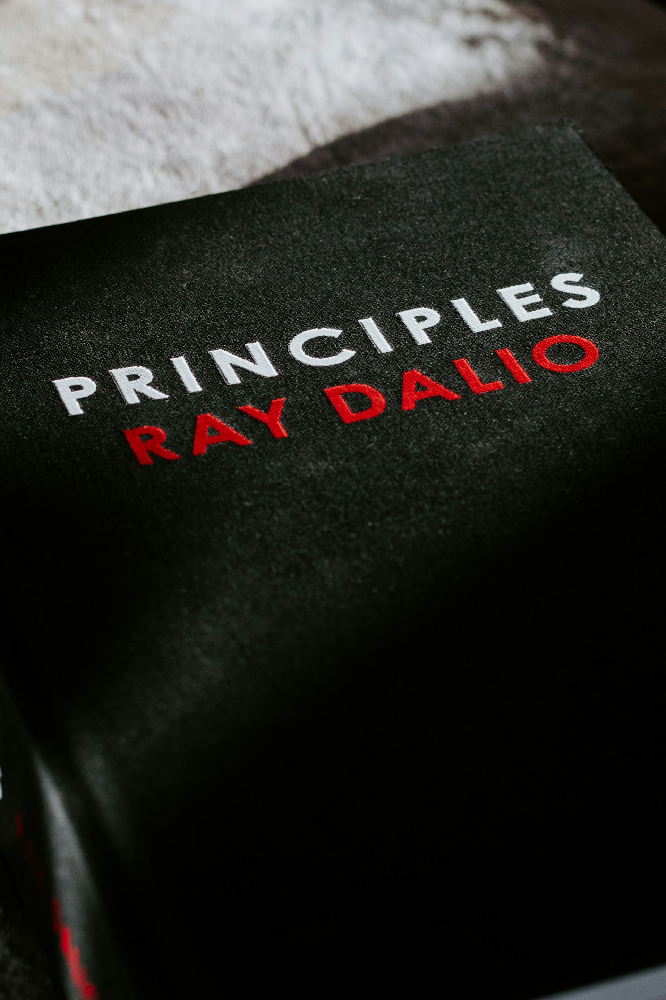

Favorite Book
Principles By Ray Dalio
My favorite book of intrest so far is Principles by Ray Dalio. Ray Dalio is a prominent leader in world econmics and finance. In this book he lists and explains in great detail on how to improve ones self and business by following a set of pricinples that he created over the years he has been active at his company.
For more inforamtion or intrest in the book please click here Principles, Ray Dalio
Favorite Song
Hollow be thy name by Iron Maiden
Youtube Music Video Link Click Here
Favorite Movie/Show
Grand Tour Season 4
One of my favorite shows is the Grand Tour especailly season four, starring, Jeremy Clarkson, James May, and Richard Hammond. The trio go on some of the most incrediable adventures and completing challenges which result in a comedy for all to enjoy and those who are nostalgic from when they were on Top Gear.